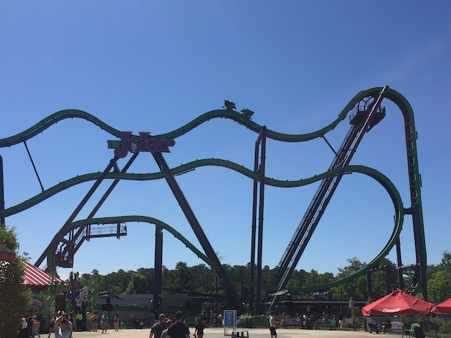
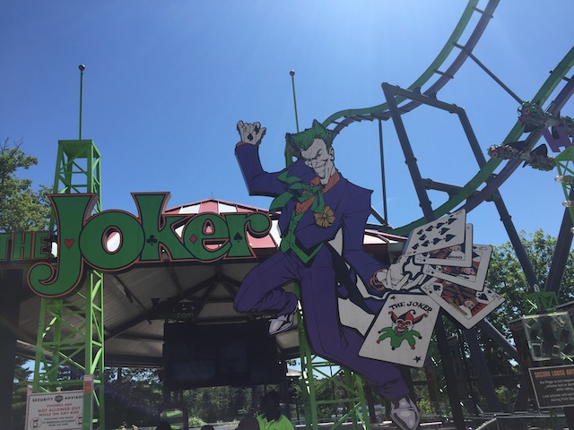

| |
Joker Review

We're here at Six Flags Great Adventure. Today's ride we'll be reviewing for you is Joker. This iss an S&S Free Spin. They're damn near everywhere these days. Particuarly at Six Flags. And sure enough, we're at a Six Flags park. And...this one is lame. OK. It's not quite as bad as the other ones I've ridden at Six Flags. But keeping it real. This is NO Arashi. That ride CURBSTOMPS all the other Free Spins, even the "best" one aside from Arashi. So yeah. Let's hop in the cars, pull down the awkward rubber vest OTSRs, and off we go! We head up the lifthill, and....we don't flip that much. You're generally rightside up. We get a nice view of Six Flags New England and some of the other rides going up the lifthill. But before we get too much into it, we crest the lifthill, and....NICE!!! We get a couple good flips here. At least usually. We go over the rest of the bumps and....kind of awkward. Damn it! More flips please! We then head into one of those funky drops, and....yeah. It's better on Insane. But...it's still a lot of fun. No big deal! We then go through a couple small little hills. We might get another flip there too. Cool. We go down another one of those funky drops, rise up, and head into the brake run. Aww. That was fun, but...it could be SO MUCH BETTER! Sure, it's still fun, you still get a decent number of flips, and I had fun. But I want Arashi-level crazy amounts of flipping! Not this! Please let the other ones be Arashi-crazy, but I'm not holding my breath.
7/10
Location: Six Flags New England
Opened: 2016
Built by: S&S Power
Last Ridden: June 17, 2021
I have ridden this exact same ride at the following parks.
Nagashima Spaland
Six Flags Discovory Kingdom
Six Flags New England
Joker Photos


Home
|